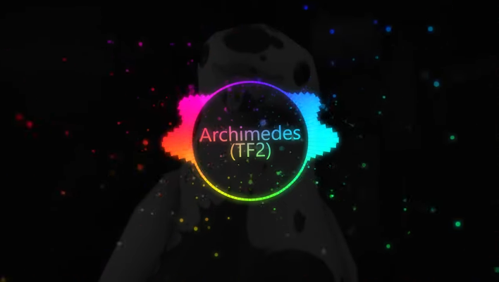
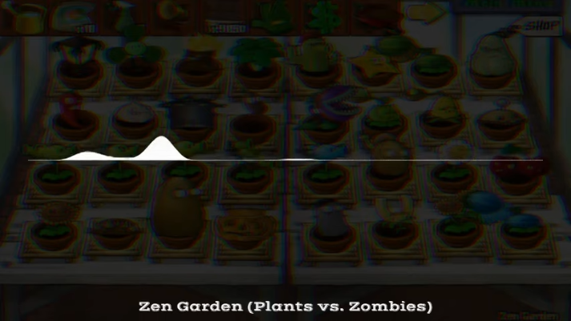
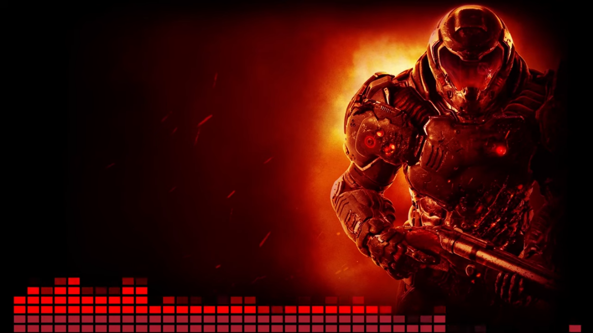

At the moment, I am using Hitfilm Express since 2020. Hitfilm Express is the free version of Hitfilm itself and the cool thing about it, that it lets you decide to pick, whatever plugins, effects etc. you need for your editing. Since I am doing music videos, I bought the Audio FX Expansion, which is the visualizer you see in most of my recent videos.
In Hitfilm you can create a visualizer by dragging any audio file into the project media folder. Then you need to create a composite shot, which is basically a group of layers. Here you can drag the audio, the audio FX and make some texts here too. Drag the audio first, then the audio plugin so you can find it under Effects > Audio Input > choose Song. Once you have done that, it automatically creates the visualizer for you and now you can start tweaking.
Hitflim Express example

Avee Player is a great Windows UWP app, that also runs on the phone. It lets you create a visualizer with many different options, which makes it a bit complicated at first. There are some presets you can use for basic effects though. You only need to change the song and add some text or background. I would have used it all the time, as the presets lets you create a visualizer quickly but for whatever reason, the sound of the rendered videos have crackling noises. It also lets you just render the videos in 30 FPS in the current version. Due to that reason, I stopped using it for now
Avee Player example
Astrofox is a free and open source alternative to Avee Player. It is still in development and has way less features for now. You can only choose from a handful effects and visualizers and there are less ways for customizing them. The interface also is not very intuitive yet. However, if simple visualizers are enough, Astrofox is a great choice. Hopefully, we can see new improving updates soon.
Astrofox example
Shotcut is another free and open source alternative for video editing software. In my opinion, Shotcut is one of the best alternatives out there, which is being developed by a community. The good thing beside being free is the amount of effects and options. The first thing that you probably encounter is performance - no matter how fast your computer is. That's something, you need to get used to over time. That does not mean, that if you edit 4k files, you end up in the hell of lag: you can improve that by using the proxy function, making basically smaller files of the original for a smoother edit. I also recommend shotcut if you quickly want to trim or render something. It's perfect for that. I already used it as a lazy replacement for Hitfilm, when my video was only about edits. For audio visualizers, you have one effect here, but it clearly doesn't look that good as it does in Hitfilm in my opinion.
Shotcut visualizer example
Deprecated video editing tools:
The first video editing tool I used was Sony Vegas Movie Studio 9, later version 11. It was my main editing tool and it worked quite well. I would still recommend it because it is easy to use and beginner friendly. The amount of effects were enough to make a good video edit - if you however focus on making multiple scenes of yourself playing, then it is enough anyway. What bugged me after a while were the small hiccups it had. It was sadly also one of more unstable apps I used. Always hit CTRL+S! For a while, I was also using Sony Vegas Pro Edit 14. It was in a humble bunlde for cheap but the edit version was not even better than the movie studio version.